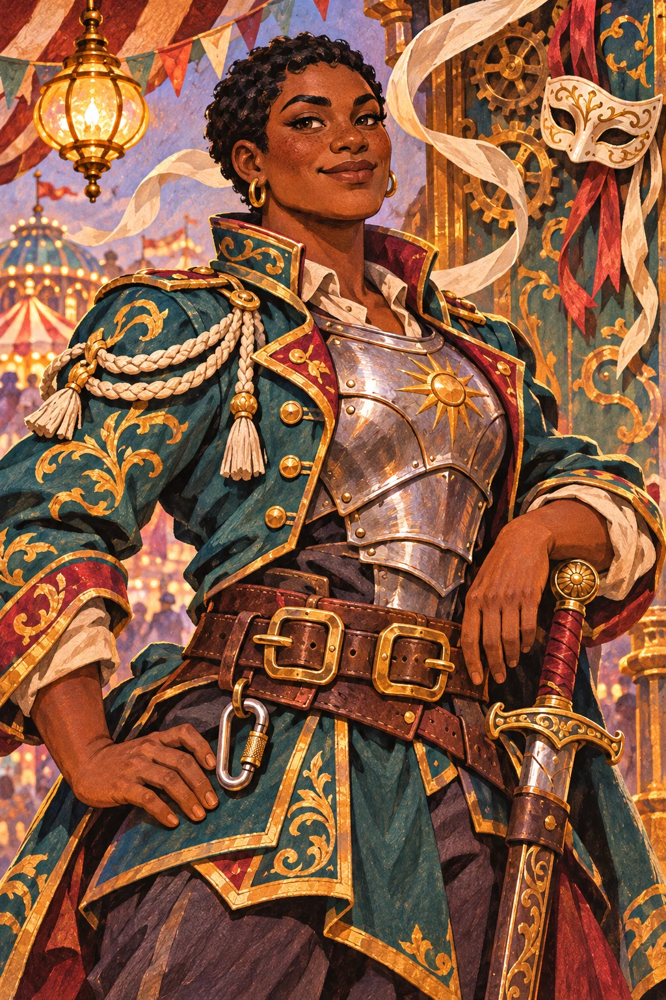
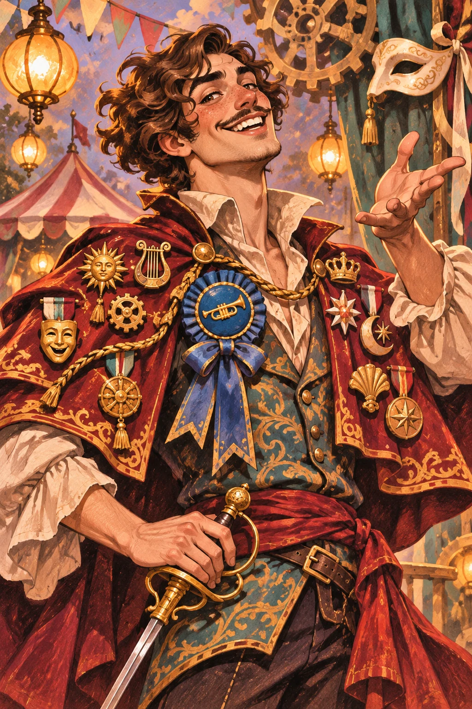
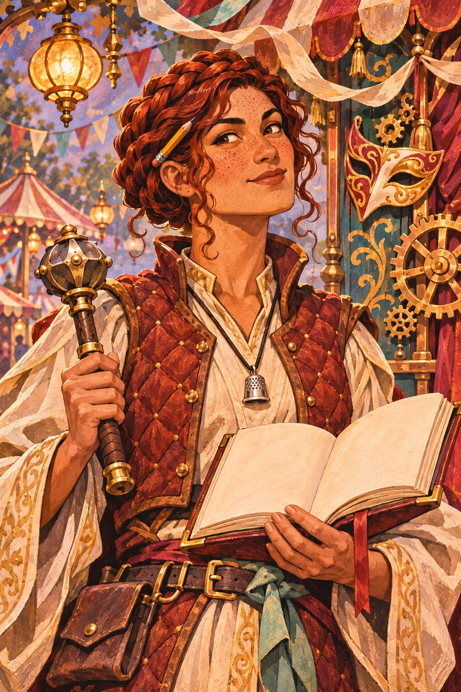
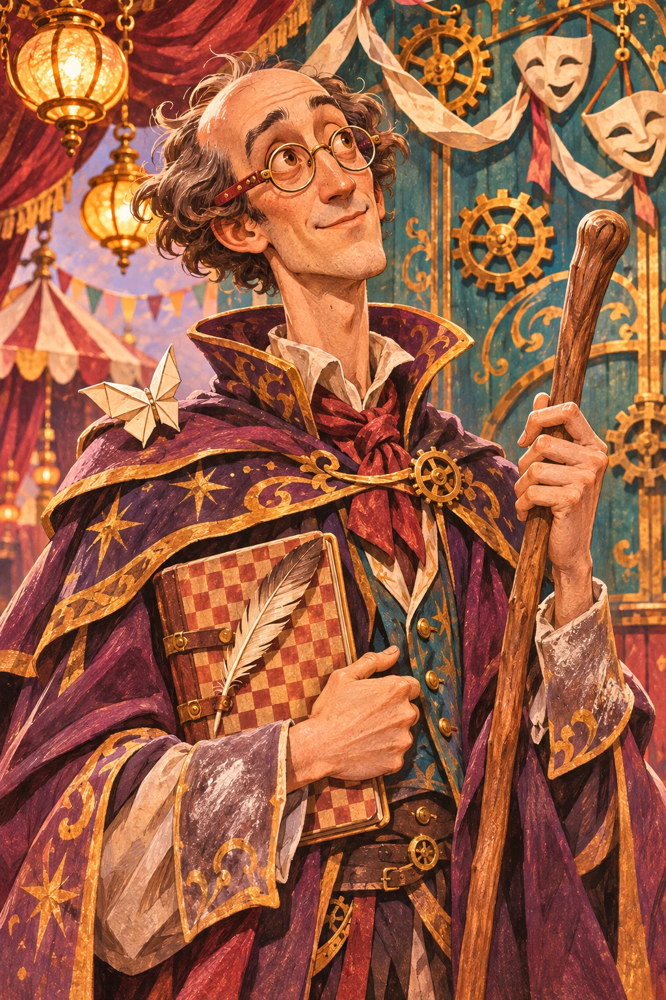
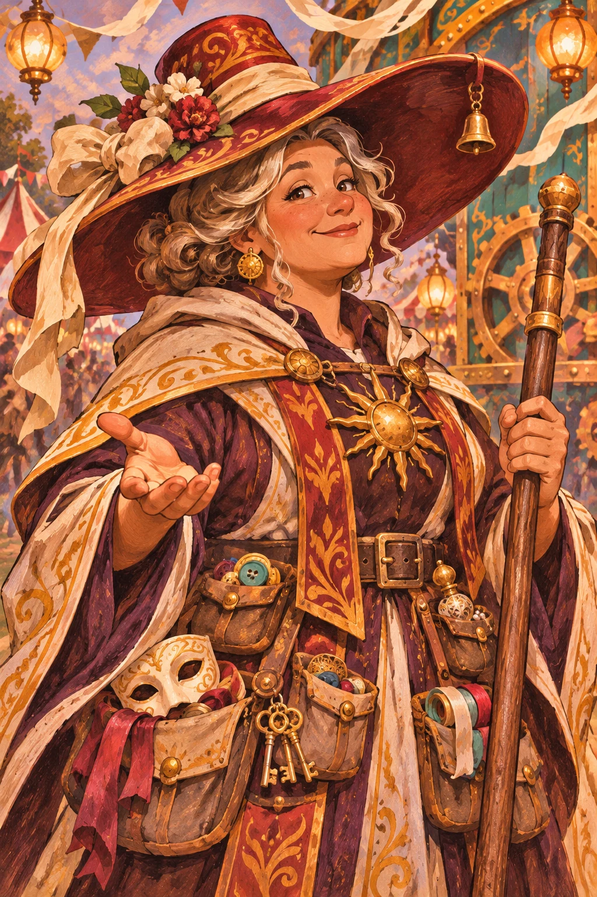
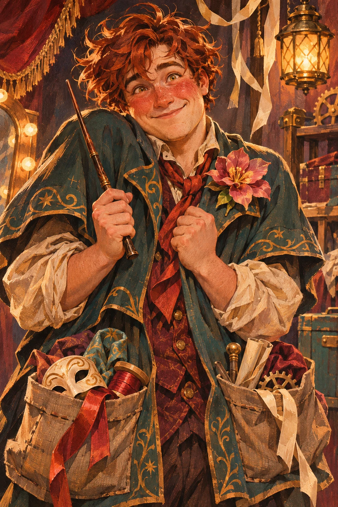

Мир и начало
На Тракте Жестяного Полдня заведения ходят в гости, зонтики спорят с дождём, а парадная маска изображает выбранную добродетель. Казино проводит бесплатные состязания находчивости с настоящими призами. Игровые столы служат фантастическими декорациями: ставки деньгами и обучение азартным играм не нужны. Герои третьего уровня используют обычные классы; волшебные костюмы и поклоны описывают обстоятельства, а не добавляют новые автоматические способности. Тракт живёт по ярмарочной хартии: на хартийной земле обещание на афише — закон, и призовые талеры, сошедшие с заведения на землю, принадлежат тем, кому их обещали. Хартия действует до Медного Рубежа; за ним хартия молчит. По обычаю заведение вправе назначить цену за голову: ловец приводит голову на борт и получает цену из листка розыска. У казино восемь полых медных ног: в каждой шахта с лестницей и страховочными сетками, наверху коленный люк, внизу люк лодыжки над ступнёй. Короткая дорога к Рубежу идёт через безветренный Медный овраг.
На Тракте Жестяного Полдня заведения ходят в гости. Чайная на гусиных лапах раскланивается с цирюльней, библиотека на колёсах приподнимает крышу перед бродячим театром, а самое большое и самое шумное из всех — казино «Тысяча реверансов» — шагает по холмам на восьми медных ногах, каждая толщиной с колокольню. На его балах носят маски добродетелей, его поклоны слышно за три холма, а его хозяин, Октавиан Блям, говорит о себе только в третьем лице. Следом за казино, как хвост за воздушным змеем, кочует Ленточный торжок: возы с пирожками, вышивальные лотки, чайница под полосатым навесом. Тракт живёт по ярмарочной хартии. Вдоль дороги стоят хартийные столбы с медными табличками, и на хартийной земле обещание на афише — закон: обещанный приз, сошедший с заведения на землю, принадлежит тому, кому его обещали, и отнять его не вправе никто. Хартия действует до Медного Рубежа, длинного вала из позеленевших плит; за ним она молчит. Зато по обычаю Тракта обиженное заведение может назначить цену за голову обидчика: тогда у чайницы вывешивают жёлтый листок розыска, и за дело берутся ловцы с сачками — ловят, штрафуют и вписывают на «Доску неблагодарных гостей». На днях казино провело бесплатный конкурс находчивости и пообещало победителям девяносто золотых талеров. Победили шестеро, и трое из них едут в вашем фургоне: двое из вашего экипажа и Феликс Перескок — громкий, весёлый, ваш друг, которому бабушка вышила на синей ленте победителя зайца, прыгающего через забор. Сегодня утром призы обещали вручить у хартийного столба. Ваш фургон стоит в конце рядов, и над торжком, заслоняя солнце, поднимается медная нога.

28 лет · воин · уровень 3
Злата Две Пряжки
Бывшая привратница казино; держит строй и люки
Хиты 31 · КД 11 · Скорость 30 футов
СИЛ 16 · ЛОВ 12 · ТЕЛ 16 · ИНТ 10 · МДР 12 · ХАР 10
Длинный меч, ручной топор.
Безукоризненный жакет, тяжёлые ботинки и пояс с двумя пряжками, которые никак не могут между собой договориться.
Два сезона ты стояла у Ворот Почтенных Пальто рядом с Бронком и знаешь, как кланяются латные распорядители. Бронк тебя узнает в лицо.
Связь
Ты доверяешь находчивости Миро, но просишь его заранее говорить, когда понадобится ловить падающий шкаф.
В центре внимания
Удержи люк и реши, кого пропустить первым.
Личный вопрос
Сможешь ли ты доверить безопасность другому, когда захочется удержать всё самой?

24 лет · плут · уровень 3
Миро Фанфарон
Победитель конкурса; лицо прикрытия и придумщик чрезмерно длинных титулов
Хиты 24 · КД 13 · Скорость 30 футов
СИЛ 10 · ЛОВ 16 · ТЕЛ 14 · ИНТ 14 · МДР 12 · ХАР 12
Рапира, короткий лук.
Короткий плащ, дюжина ненастоящих орденов и синяя лента победителя с вышитой трубой с бантом. Улыбка человека, которого уже представили трижды.
Твою командную головоломку назвали лучшей, и тебя запомнили в лицо ещё на помосте конкурса. Награду хозяин казино оставил себе.
Связь
Ясна однажды спасла твоё выступление честным вопросом; теперь ты проверяешь у неё самые красивые выдумки. А Злате ты обещал заранее предупреждать, когда понадобится ловить падающий шкаф.
В центре внимания
Создай нелепую, но связную легенду и реши, когда перестать поддерживать её ради товарища.
Личный вопрос
Какую правду о себе ты оставишь в выбранной маске?

31 лет · жрец · уровень 3
Ясна Напёрсток
Служительница Малых Обещаний; знает хартию и ведёт переговоры
Хиты 24 · КД 11 · Скорость 30 футов
СИЛ 12 · ЛОВ 12 · ТЕЛ 14 · ИНТ 10 · МДР 16 · ХАР 14
Посох. Заклинания: «Лечащее слово», «Обнаружение магии».
Тёплый жилет, серебряный напёрсток на шнурке и записная книжка с большими полями.
Ты обещала помочь призёрам получить заработанное. Договоры с Серафимой, Биби и любыми распорядителями ты читаешь до последней строки, а ярмарочную хартию знаешь по службе.
Связь
Борис регулярно напоминает тебе, что доброе намерение тоже нуждается в запасном выходе.
В центре внимания
Согласуй понятную долю союзника и назови предел, после которого предложишь прекратить операцию.
Личный вопрос
Как ты отличаешь справедливое возмещение от удобного оправдания жадности?

35 лет · волшебник · уровень 3
Борис Складень
Исследователь придворных иллюзий; ведёт блокнот листов шестерён
Хиты 20 · КД 12 · Скорость 30 футов
СИЛ 8 · ЛОВ 14 · ТЕЛ 14 · ИНТ 16 · МДР 12 · ХАР 12
Посох. Заклинания: «Обнаружение магии», «Туманный шаг».
Очки с разными дужками, мел на манжетах и бумажная бабочка, изображающая важного секретаря. Под мышкой блокнот в клетку с гусиным пером на обложке.
Казино обещало призовой фонд за задачи, которые ты помог составить; присвоение награды оскорбляет сам смысл конкурса. Шагомер Пафнутия ты читаешь так, как другие читают письма.
Связь
Злата терпеливо слушает твои длинные объяснения; ты стараешься доверять её коротким решениям.
В центре внимания
Объясни одно фантастическое правило понятным опытом и оставь другому герою право придумать его применение.
Личный вопрос
Согласишься ли ты на простой план, если самый красивый трюк опаснее для друзей?

27 лет · воин · уровень 3
Полина Шаг-в-Шаг
Победительница конкурса; акробатка и организатор общего отхода
Хиты 31 · КД 11 · Скорость 30 футов
СИЛ 16 · ЛОВ 12 · ТЕЛ 16 · ИНТ 10 · МДР 12 · ХАР 10
Длинный меч, ручной топор.
Полосатые рукава, мягкие сапоги, длинная лента для обозначения места встречи и лента победителя со следами в полоску.
Ты выиграла конкурс вместе с друзьями, и тебя запомнили в лицо. Ты не собираешься позволять хозяину уехать под их аплодисменты.
Связь
Ты споришь с Миро о времени выхода и всё равно оставляешь для него место. Феликс — твой напарник по конкурсу: вы вдвоём решили задачу на поворотном помосте.
В центре внимания
Назначь общий сигнал отступления и реши, менять ли маршрут ради человека, который нарушил договор.
Личный вопрос
Сумеешь ли ты уйти вовремя, когда успех кажется всего в одном прыжке?

23 лет · плут · уровень 3
Тим Кружевник
Дополнительное место: дипломат соперничающих артелей
Хиты 24 · КД 13 · Скорость 30 футов
СИЛ 10 · ЛОВ 16 · ТЕЛ 14 · ИНТ 14 · МДР 12 · ХАР 12
Рапира, короткий лук.
Кружевные перчатки без пальцев и коллекция смешных подписей на собственных визитках.
Ты пришёл с друзьями и хочешь испытать себя в деле, где важнее договориться, чем оказаться самым ловким. Артель «Безупречные огурцы» тебе знакома по ремеслу.
Связь
Тебе нравится спорить с Полиной о красивом уходе; вы согласны, что друзья должны уйти вместе.
В центре внимания
Дай соперникам предложение, которое выгодно обеим сторонам, или открыто назови причину отказа.
Личный вопрос
Как выглядит честная конкуренция между людьми, которые профессионально притворяются?

40 лет · жрец · уровень 3
Эльда Бубенчик
Дополнительное место: защитница гостей и служащих, примирительница
Хиты 24 · КД 11 · Скорость 30 футов
СИЛ 12 · ЛОВ 12 · ТЕЛ 14 · ИНТ 10 · МДР 16 · ХАР 14
Посох. Заклинания: «Лечащее слово», «Обнаружение магии».
Широкая шляпа с единственным тихим бубенчиком и карманы для чужих потерянных мелочей.
Ты поддерживаешь друзей, но хочешь, чтобы их остроумие не оставило без заработка невиновных служащих казино.
Связь
Ясна помогает тебе не принимать чужую ответственность автоматически; ты напоминаешь ей о том же.
В центре внимания
Выбери конкретного человека, которому поможешь при суматохе, и попроси о помощи для себя.
Личный вопрос
Кого ты согласишься разочаровать, чтобы сохранить собственные границы?

26 лет · волшебник · уровень 3
Глеб Кармашек
Дополнительное место: мастер запасного реквизита
Хиты 20 · КД 12 · Скорость 30 футов
СИЛ 8 · ЛОВ 14 · ТЕЛ 14 · ИНТ 16 · МДР 12 · ХАР 12
Посох. Заклинания: «Обнаружение магии», «Туманный шаг».
Короткая мантия с огромными обычными карманами и шёлковый цветок, который цветёт от смущения.
Ты пришёл по приглашению команды и мечтаешь придумать запасной ход, который пригодится без катастрофы.
Связь
Борис уважает твою любовь к импровизации, а ты учишься спрашивать, прежде чем менять чужую задумку.
В центре внимания
Подготовь честно оговорённый резерв и реши, отдать ли славу за него тому, кто сумел им воспользоваться.
Личный вопрос
Сможешь ли ты радоваться общему успеху, если твой запасной трюк так и не понадобится?